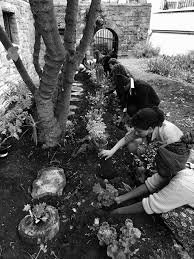

Vanessa Dion Fletcher is a Lenape and Potawatomi neurodiverse Artist. Her family is from Eelūnaapèewii Lahkèewiitt (displaced from Lenapehoking) and European settlers. She Employs porcupine quills, Wampum belts, and menstrual blood, to reveal the complexities of what defines a body physically and culturally. Reflecting on an Indigenous and gendered body with a neurodiverse mind, Dion Fletcher creates art using composite media, primarily working in performance, textiles and video. She graduated from The School of the Art Institute of Chicago in 2016 with an MFA in performance at York University in 2009 with a Bachelor of Fine Arts. She has exhibited across Canada and the USA at Art Mur Montreal, Eastern Edge Gallery Newfoundland, The Queer Arts Festival Vancouver and the Satellite Art show in Miami. Her work is in the Indigenous Art Centre, Joan Flasch Artist Book Collection, Vtape, Seneca College, and the Archives of American Art.
Kelsey Pugh is a paleoanthropologist studying ape and human evolution from the fossil record. She uses a range of methods including comparative anatomy, phylogenetics, and 3D geometric morphometrics in her research to address questions such as “what is the nature of the last common ancestor of apes and humans?". She graduated from the City University of New York in 2020 with a PhD in Biological Anthropology.
Anna Stielau is an assistant professor of art history and visual culture at OCADu. She received her PhD from NYU’s Department of Media, Culture, and Communication, and previously served as the Weisman Postdoctoral Teaching Fellow in Visual Culture at Caltech. Her research explores how contemporary African artists use media and technology to imagine the world, otherwise.